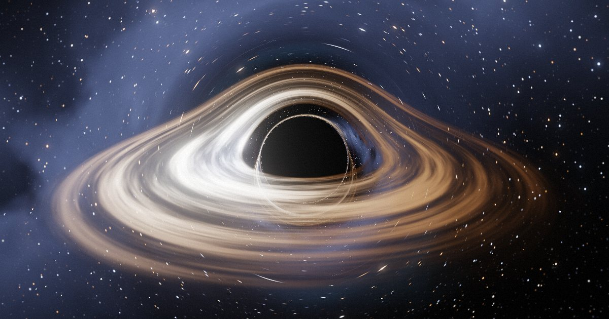
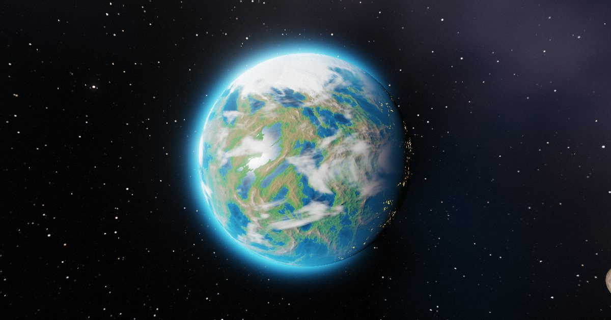
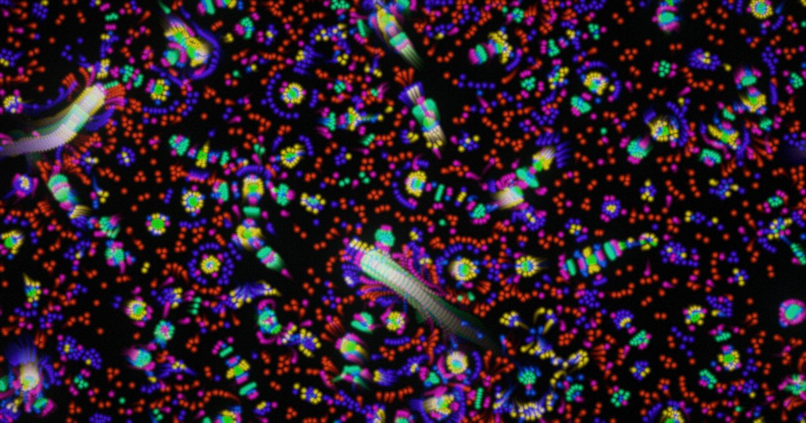
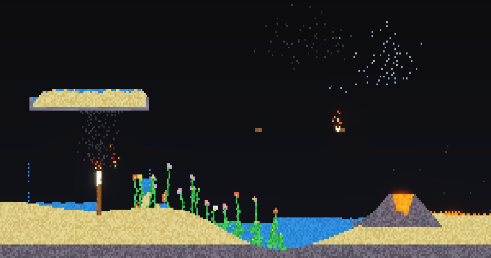

KANATA LAB
ブラウザだけで動く 4 つの実験。ライブラリなし・画像素材なし・ビルドなし。 どれも HTML ファイル 1 枚と、数式と、決まりごとだけでできています。スマホでそのまま触れます。
-

EVENT HORIZON 観る
画面の 1 ピクセルごとに、一般相対論の式で光の道すじを解くブラックホール。回して、近づいて、地平線のすぐ外から空を見上げられる。
- 測地線の数値積分
- ドップラー効果
- 重力レンズ
-

NAMEPLANET 自分の星
名前を入れると、その名前だけの惑星がひとつ生まれる。同じ名前なら世界中どこで開いても同じ星。共有カードも作れる。
- 名前 → 乱数の種
- 地形・雲・環・月を数式で生成
- レア度つき
-

PRIMORDIA 眺める
決まりは「この色はあの色が好き・嫌い」の表ひとつだけ。それだけで粒が群れ、追いかけ、細胞のように動きだす。表は自分で書きかえられる。
- 粒子生命
- 創発
- 宇宙ごと URL で共有
-

DUSTBOX 遊ぶ
砂、水、火、溶岩、火薬、種。指でなぞると、ひと粒ずつが決まりどおりに落ち、流れ、燃え、爆ぜ、花を咲かせる。
- セル・オートマトン
- 14 種類の素材
- 1bit ディザ表示